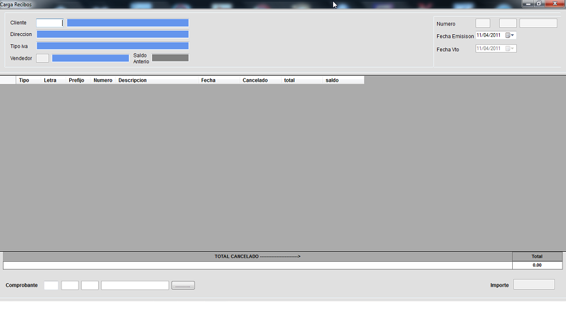
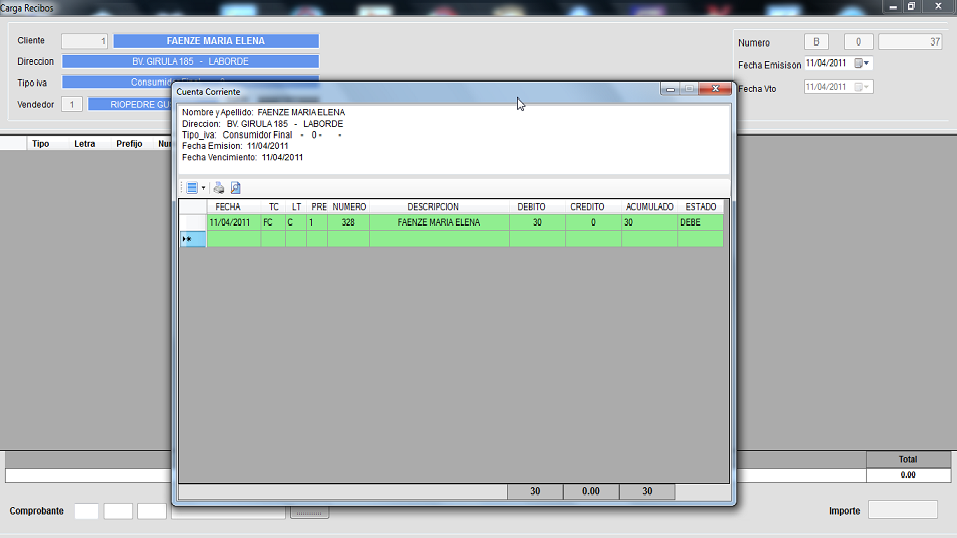
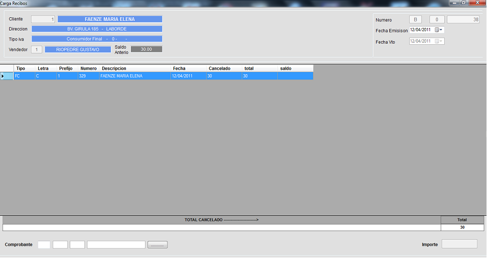
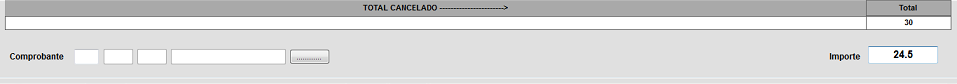
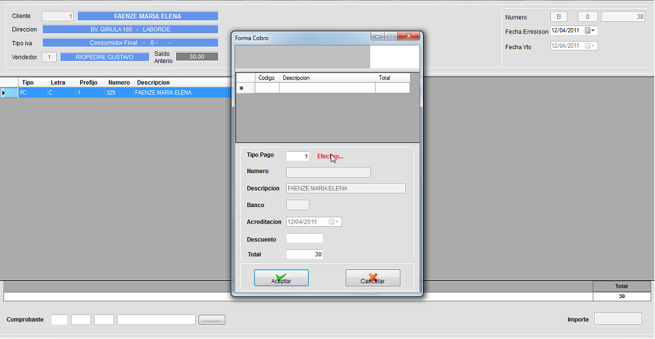

RECIBO
En este formulario podemos registrar las cobranzas de las cuentas corrientes por medio de un recibo. Como podemos obserbar en la sig figura. Parra empezar debemos seleccionar el cliente al cual vamos a registrar su pago; con la tecla( F1) buscamos el cliente o si conocemos su codigo lo introducimos y presionamos (ENTER). A continuacion el cursor se posicionara en el campo vendedor; hacemos el mismo paso que para seleccionar un cliente pero con un vendedor de esta forma estamos asociando este cobro a dicho vendedor.

Una vez que terminamos el cursor quedara en el campo comprobante, con la tecla (F1) se abrira una nueva ventana donde nos mostrara todas las deudas del cliente como podemos ver en la sig. figura. Para seleccionar la deuda que deseamos cancelar lo hacemos con la tecla (ENTER) vemos que se pintara la fila con verde, en caso de equivocarnos podemos presionar (ENTER) sobre la fila pintada y asi se desmarcara.

Una vez seleccionadas todas las cuentas a cancelar le damos (ESCAPE) y asi apareceran las cuentas en el recibo como vemos en la siguiente fig.

Podemos cancelar la cuenta total presionando (ESCAPE) y luego (F5) para confirmar el recibo o podemos cancelar la cuenta por un importe determinado. En este caso presionamos la tecla (ESCAPE) y seleccionamos la cuenta a la cual cancelaremos dicho importe; luego en el campo importe ponemos el valor a cancelar

Una vez finalizado procedemos a finalizar el recibo presionando (ESCAPE) y luego (F5) donde aparecera un cuadro preguntado si confirmamos el recibo y si deseamos imprimirlo luego aparecera una nueva ventana con la forma de cobro del recibo (Presionando la tecla F1 podemos ver las opciones de cobro). Seleccionamos las opciones y finalizamos el recibo.
